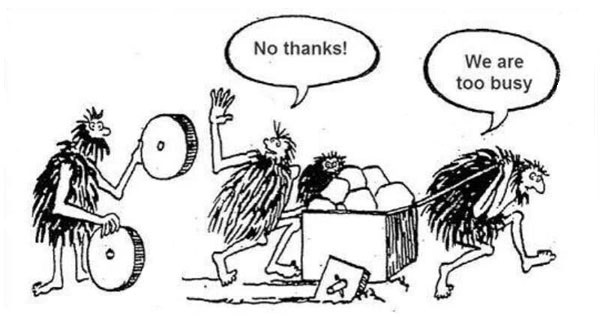

Inspired by Sphaerophoria’s channel description, Tsoding’s recreational programming and some of my own projects, but specially Goburin as of late, this post is about something that is frowned upon in the sofware industry and, frankly, sounds counterintuitive: re-inventing the wheel.
In this topic about “useless work” I want to focus on an area that I believe is often barren and even more “useless” (for whatever metric you want to use). More specifically I want to talk about building Square Wheels.
“Building square wheels to better appreciate the round ones.”
— Sphaerophoria’s Youtube channel description
If anyone knows who the original author of the sketch is please let me know, I would love to credit them.
When people talk about reinventing the wheel in software, it’s usually a warning: don’t waste time solving problems that others have already solved. And in most cases, that is actually very good advice. At the end of the day, we, humanity, are were we are today because we are standing on the shoulders of giants. But sometimes, you don’t reinvent the wheel to be productive; you reinvent it to learn, and maybe, maybe to re-discover.
I’ve always been the kind of person who needs to experience something to truly remember it and understand it. Back in school, I couldn’t just read textbooks and expect to memorize the info in them. Instead, I had to rewrite the material, summarize it, read it back again and rewrite it as many times as necessary until… it just stuck (this was my “hack”, specially for history). I suspect that is why maths and science were easier for me; the text books already came with dozens and dozens of exercices that were ever-so-slightly different from the ones before. It was almost like baked-in Spaced Repetition.
Fast forward to today: I’m a software engineer and that same learning pattern persists. I can read about software architecture, design patterns, and documentation aaall day long, but theory, and text, alone don’t give me the visceral understanding of why something is designed the way it is and how it looks like. I still put a lot of value in good documentation, and do read it, but I need to feel the constraints in order to understand the trade-offs. And that’s why I build Square Wheels.
When I build something from scratch, even something that already exists, like a UI framework or a programming language, I’m not doing it to compete with the world’s most polished, roundest wheels. I’m doing it to understand where the design lines were drawn, to put myself for a moment in the shoes of the designers and ask myself: Where do constraints end and personal choices begin? What trade-offs forced those seemingly weird architectural decisions? What would be different if I had different constraints and objectives?
You can’t fully appreciate all those points until you try answering them for yourself. By struggling with Square Wheels, I develop a deeper intuition for why round wheels feel and look the way they do. It’s about empathy with the original builders, not hubris to replace them, but also a healthy dose of skepticism (what used to be called critical thinking) paired with a drive to explore.
This mindset of skepticism and exploration also defines how I approach projects. I have, what I call, a Spaghetti Wall methodology: keep throwing ideas at a wall and see what sticks, adjust accordingly. Just like cooking spaghetti, if they stick to a wall after being thrown, it probably means they are cooked (I actually do not suggest cooking real pasta this way… I also acknowledge the fact that I’m not the inventor of such a method, I’m just a follower of this process).
I write code freely, experiment with it, and then reflect on what worked and, most importantly what didn’t. When a piece of code feels right and proves itself useful in different contexts, I extract it into a small library. That way, I’m not constantly reinventing everything, I’m refining and understanding what are my trade-offs. Over time, I accumulate a toolkit of Square ones that are actually quite useful to me.
This approach also has another purpose: to radically question the status quo. Not in a “I can do better” kind of way, but more in a curious, almost archeological sense, is this really the best solution, or did we forget something along the way?
I often spelunk through software forums, reading technical articles that propose something seemingly new, only to find comments saying, “we had this in the 70s”. It’s both humbling and frustrating. It feels like the industry has an allergy to reinventing wheels, yet ends up doing exactly that, producing carbon copies written in newer languages.
But what’s missing is the genuine act of questioning. Why were those decisions made back then? What constraints shaped them? Could we, with our modern context and different priorities, stumble upon a better trade-off for today’s use cases? Or even just for my use case? That’s what Square Wheels are for: not just to relive history, but to probe it, modify it, and see if it still fits.
We, developers, often have a very scientific / technical approach to programming, hence why we name ourselves Computer Scientists or Software Engineers. But I would argue that our field changes constantly, differing from traditional sciences. In them, you can establish some axioms or ground laws and as a result build on top of it.
You “never” question those assumptions and, as a result, are able to engineer buildings, craft spaceships and develop new vaccines. (I put never in quotes because never say never, amiright?). But for software development the tools and culture of today is much a work of understanding the trade-offs and real, battle-tested improvements as it is marketing. The language-wars are a clear indicator of that. Languages are tools, there are tools better than others but in a grand-view they exist only to be used. Maybe it is my shallow understanding of how science work, but I do not see scientists on a daily basis discussing if R or Matlab is better, they are just tools and they use them to drive their real objective which is to do quality research and development.
Sometime along the way, we just forgot to view programming languages and frameworks as tools and ended up confusing them for the real deal. I argue that we need more Square Wheels, more stupid questions and more understanding of what our tools are really capable of doing. The end goal, at least mine, in to build quality software. I agree that given a set of constraints and needs, there are tools that are better than others, but that’s how much I will contribute to the language wars.
There’s a kind of pain that comes from working on these projects. Starting yet another UI framework or a new programming language often feels absurd. Why would I do this when there are dozens out there already? But that discomfort is part of the process. It’s that friction paired with reflection that teaches you. There is more to a UI framework than just the UI-specific parts, maybe there is an idea in those that you can extrapolate and save in your brain to be used in later projects.
Building Square Wheels is not about being inefficient. It’s about making inefficiency a tool. It’s the difference between knowing that something is hard, and knowing why it’s hard. It’s about not being afraid of asking stupid questions and feeling even worse when the aswer is the same that that the one everyone keeps repeating. That is also why I think it is important to never stop having fun.
This is a segue to Recreational Programming, which in my personal opinion Tsoding is a very good example of what it is. If you approach this challanges in a playful manner, the output gets exponentially better. You no longer fear feeling stupid, you are just exploring like in a videogame. I’m sure if you played some games in your life, there was a moment when you did an extremly obviously stupid choice just to regret it seconds later (like wondering if falling thousands of meters would kill your character… guess what? It did. Surprising? Not really…). But you learned, or I hope so. Otherwise you can repeat it again until you understand. And that is the beauty of learning in a recreational way, you trumping fear of failure with fun (More on that on a future blog).
I’m not advocating that everyone should always build everything from scratch. That would be pointless and painful. But I do believe every developer should occasionally build their own Square Wheels. The experience grounds you. It gives you a tangible sense of where the boundaries of good design and personal taste intersect.
In the end, Square Wheels aren’t meant to roll far. They’re meant to teach you how to make better ones.
If you are interested in giving it a shot, there is a very cool GitHub repo called Build Your Own X by CodeCrafters. I’m not affiliated whatsoever, but it is a good place to find step-by-step guides. Just because you are exploring and tinkering around does not mean you have to do it blindly.